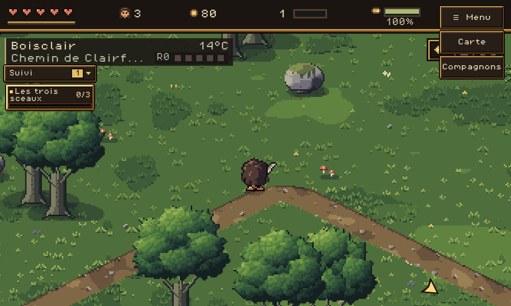
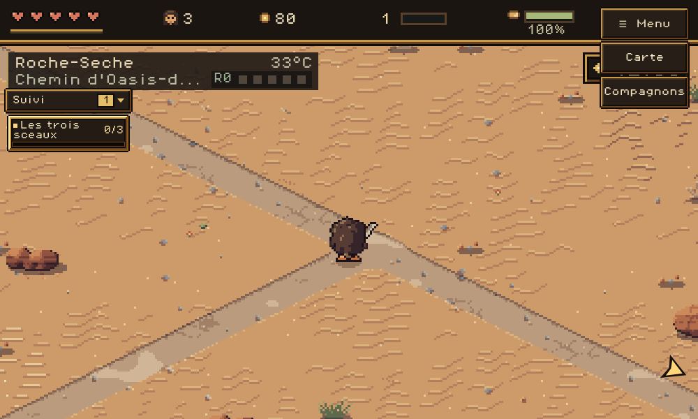
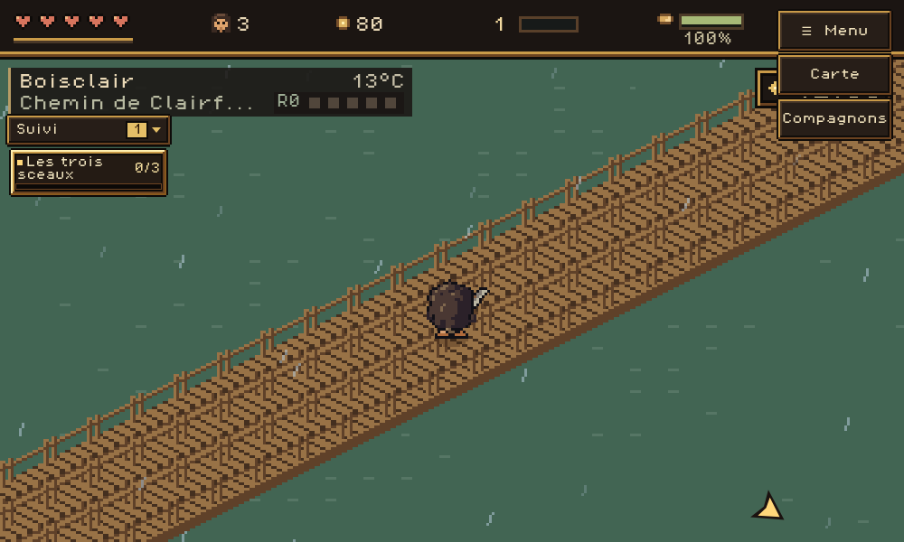

137 routes terrestres avec les mêmes villes et 57 points de pont conservés. Les pièces Piskel de Sarak et Teremor dessinent les lignes, coudes adoucis, jonctions en T et croisements. Les quatre routes maritimes gardent leur tracé.
Les parcours terrestres représentent 316,724 km physiques contre 250,184 km de référence. Les durées suivent les distances réellement parcourues, sans changement de vitesse.
Jouer · Clairfoyer et ses postes · Contrôles avec worker · Contrôles sans worker


